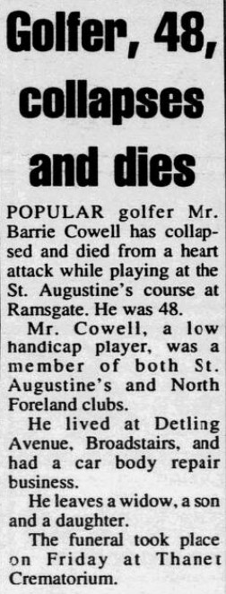
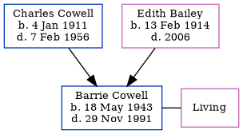

Barrie Ernest Cowell 1943 - 1991 [ Home ] | [ Calendar ] | [ Surnames Index ] | [ Family History ]The younger of 2 children of Charles Cowell (a truck driver) and Edith Bailey Barrie Cowell , a cousin on the mother's side of Nigel Horne , was born in Thanet, Kent, England on May 18, 19431,2,3 . He married Mary Atkins in Romford, Essex, England around Nov 19635 . In 1991, he lived at 22 Detling Avenue, Broadstairs, Kent, England.
He died on Nov 29, 1991 in Thanet3,4 (died of a heart attack on St. Augustine's golf course).
Parents Charles John was born on Jan 4, 1911Edith Mary was born on Feb 13, 1914Citations England & Wales deaths 1837-2007 - Findmypast England & Wales, Birth Index: 1916-2005 Online publication - Provo, UT, USA: The Generations Network, Inc., 2008.Original data - General Register Office. England and Wales Civil Registration Indexes. London, England: General Register Office. © Crown copyright. Published by permission of the Cont England & Wales, Death Index: 1984-2005 Online publication - Provo, UT, USA: The Generations Network, Inc., 2007.Original data - General Register Office. England and Wales Civil Registration Indexes. London, England: General Register Office. © Crown copyright. Published by permission of the Cont England & Wales Government Probate Death Index 1960-2019 - Findmypast England & Wales Marriages 1837-2005 - Findmypast Media Thanet Times - 10 Dec 1991  England & Wales births 1837-2006 - BMD/B/1943/2/AZ/000272/111 England & Wales deaths 1837-2007 - BMD/D/1991/12/78352364 England & Wales Government Probate Death Index 1960-2019 - GBOR-GOVPROBATE-A-1990-1992-00138573 England & Wales marriages 1837-2005 - BMD/M/1963/4/AZ/000198/015 Family Tree Map
Generated by ged2site . Last updated on Feb 28, 2025